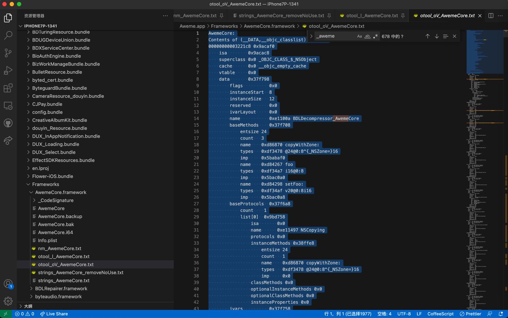
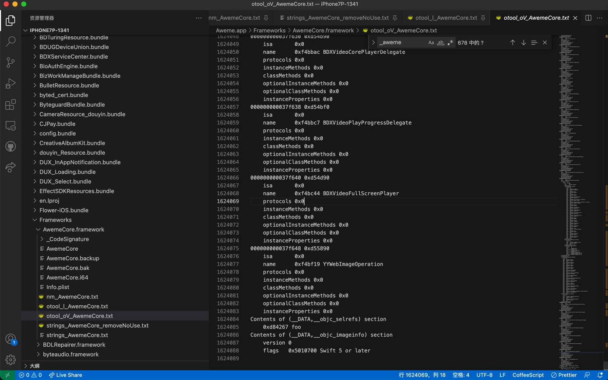
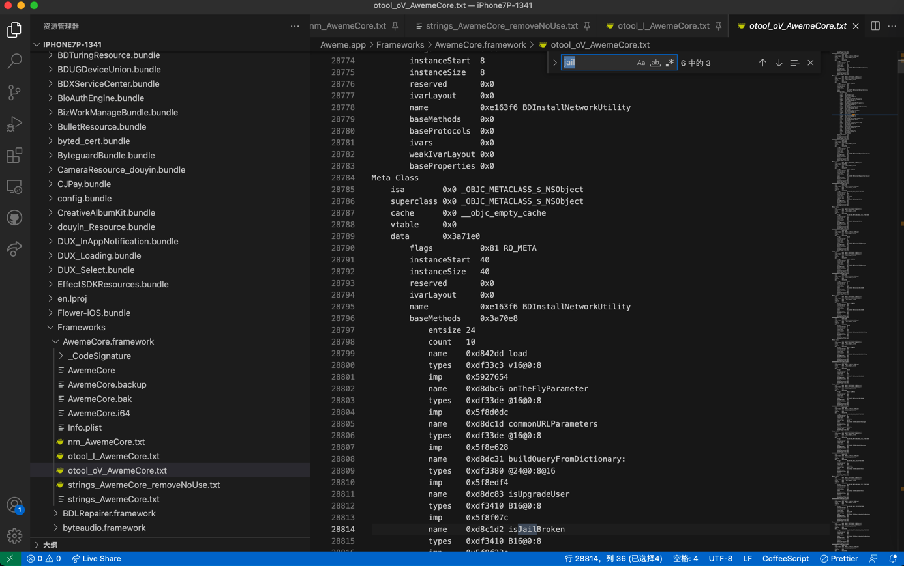

otool用法举例：AwemeCore
输入文件：
/Users/crifan/dev/DevRoot/iOSReverse/Aweme/exportFromiPhone/iPhone7P-1341/Aweme.app/Frameworks/AwemeCore.framework ➜ AwemeCore.framework ll total 10208480 -rw-r--r-- 1 crifan staff 230M 1 8 09:43 AwemeCore
-l
➜ AwemeCore.framework otool -l AwemeCore > otool_l_AwemeCore.txt
输出内容（很多，有2000多行）：
AwemeCore:
Load command 0
cmd LC_SEGMENT_64
cmdsize 1752
segname __TEXT
vmaddr 0x0000000000000000
vmsize 0x0000000000304000
fileoff 0
filesize 3162112
maxprot 0x00000005
initprot 0x00000005
nsects 21
flags 0x0
Section
sectname __stub_helper
segname __TEXT
addr 0x000000000000b9b0
size 0x00000000000084c0
offset 47536
align 2^2 (4)
reloff 0
nreloc 0
flags 0x80000400
reserved1 0
reserved2 0
Section
sectname __const
segname __TEXT
addr 0x0000000000013e70
size 0x0000000000004020
offset 81520
align 2^4 (16)
reloff 0
nreloc 0
flags 0x00000000
reserved1 0
reserved2 0
Section
sectname __swift5_typeref
segname __TEXT
addr 0x0000000000017e90
size 0x0000000000002ef8
offset 97936
align 2^4 (16)
reloff 0
nreloc 0
flags 0x00000000
reserved1 0
reserved2 0
Section
sectname __swift5_fieldmd
segname __TEXT
addr 0x000000000001ad88
size 0x0000000000002988
offset 109960
align 2^2 (4)
reloff 0
nreloc 0
flags 0x00000000
reserved1 0
reserved2 0
Section
sectname __swift5_proto
segname __TEXT
addr 0x000000000001d710
size 0x0000000000000338
offset 120592
align 2^2 (4)
reloff 0
nreloc 0
flags 0x00000000
reserved1 0
reserved2 0
Section
sectname __swift5_types
segname __TEXT
addr 0x000000000001da48
size 0x000000000000028c
offset 121416
align 2^2 (4)
reloff 0
nreloc 0
flags 0x00000000
reserved1 0
reserved2 0
Section
sectname __cstring
segname __TEXT
addr 0x000000000001dcd4
size 0x0000000000000000
offset 122068
align 2^0 (1)
reloff 0
nreloc 0
flags 0x00000002
reserved1 0
reserved2 0
Section
sectname __objc_methname
segname __TEXT
addr 0x000000000001dcd4
size 0x0000000000000000
offset 122068
align 2^0 (1)
reloff 0
nreloc 0
flags 0x00000002
reserved1 0
reserved2 0
Section
sectname __objc_classname
segname __TEXT
addr 0x000000000001dcd4
size 0x0000000000000000
offset 122068
align 2^0 (1)
reloff 0
nreloc 0
flags 0x00000002
reserved1 0
reserved2 0
Section
sectname __objc_methtype
segname __TEXT
addr 0x000000000001dcd4
size 0x0000000000000000
offset 122068
align 2^0 (1)
reloff 0
nreloc 0
flags 0x00000002
reserved1 0
reserved2 0
Section
sectname __gcc_except_tab
segname __TEXT
addr 0x000000000001dcd4
size 0x0000000000000068
offset 122068
align 2^2 (4)
reloff 0
nreloc 0
flags 0x00000000
reserved1 0
reserved2 0
...
Section
sectname __PUZZLEMETHOD__
segname __DATA
addr 0x0000000000d627a8
size 0x0000000000000050
offset 14034856
align 2^3 (8)
reloff 0
nreloc 0
flags 0x00000000
reserved1 0
reserved2 0
Section
sectname IESSLynxBridge
segname __DATA
addr 0x0000000000d627f8
size 0x0000000000000010
offset 14034936
align 2^3 (8)
reloff 0
nreloc 0
flags 0x00000000
reserved1 0
reserved2 0
Section
sectname RxAnnotation
segname __DATA
addr 0x0000000000d62808
size 0x0000000000000050
offset 14034952
align 2^3 (8)
reloff 0
nreloc 0
flags 0x00000000
reserved1 0
reserved2 0
Section
sectname __objc_clsrefs
segname __DATA
addr 0x0000000000d62858
size 0x0000000000004850
offset 14035032
align 2^3 (8)
reloff 0
nreloc 0
flags 0x00000000
reserved1 0
reserved2 0
Section
sectname __thread_vars
segname __DATA
addr 0x0000000000d670a8
size 0x00000000000006c0
offset 14053544
align 2^3 (8)
reloff 0
nreloc 0
flags 0x00000013
reserved1 0
reserved2 0
...
Section
sectname _D_ustring
segname __DATA
addr 0x00000000047e5194
size 0x000000000007795a
offset 0
align 2^1 (2)
reloff 0
nreloc 0
flags 0x00000001
reserved1 0
reserved2 0
Section
sectname _D_objc_methname
segname __DATA
addr 0x000000000485caee
size 0x0000000000ae06ba
offset 0
align 2^0 (1)
reloff 0
nreloc 0
flags 0x00000001
reserved1 0
reserved2 0
Section
sectname _D_objc_methtype
segname __DATA
addr 0x000000000533d1a8
size 0x00000000001ca962
offset 0
align 2^0 (1)
reloff 0
nreloc 0
flags 0x00000001
reserved1 0
reserved2 0
Section
sectname __common
segname __DATA
addr 0x0000000005507c00
size 0x000000000017fc48
offset 0
align 2^10 (1024)
reloff 0
nreloc 0
flags 0x00000001
reserved1 0
reserved2 0
Section
sectname __bss
segname __DATA
addr 0x0000000005687900
size 0x000000000029b0ec
offset 0
align 2^8 (256)
reloff 0
nreloc 0
flags 0x00000001
reserved1 0
reserved2 0
Load command 2
cmd LC_SEGMENT_64
cmdsize 232
segname __BD_TEXT
vmaddr 0x0000000005924000
vmsize 0x000000000bb5c000
fileoff 16269312
filesize 196460544
maxprot 0x00000005
initprot 0x00000005
nsects 2
flags 0x0
Section
sectname __text
segname __BD_TEXT
addr 0x0000000005924000
size 0x000000000bb52a38
offset 16269312
align 2^14 (16384)
reloff 0
nreloc 0
flags 0x80000400
reserved1 0
reserved2 0
Section
sectname __stubs
segname __BD_TEXT
addr 0x0000000011476a38
size 0x0000000000008508
offset 212691512
align 2^2 (4)
reloff 0
nreloc 0
flags 0x80000408
reserved1 4410 (index into indirect symbol table)
reserved2 12 (size of stubs)
Load command 3
cmd LC_SEGMENT_64
cmdsize 712
segname __LTC_DATA
vmaddr 0x0000000011480000
vmsize 0x00000000011e0000
fileoff 212729856
filesize 18743296
maxprot 0x00000001
initprot 0x00000001
nsects 8
flags 0x0
...
Section
sectname _C_gcc_except_ta
segname __LTC_DATA
addr 0x000000001232e92d
size 0x000000000024ca15
offset 228124973
align 2^0 (1)
reloff 0
nreloc 0
flags 0x00000000
reserved1 0
reserved2 0
Section
sectname __fix
segname __LTC_DATA
addr 0x000000001257b342
size 0x00000000000e1298
offset 230536002
align 2^0 (1)
reloff 0
nreloc 0
flags 0x00000000
reserved1 0
reserved2 0
Load command 4
cmd LC_SEGMENT_64
cmdsize 72
segname __LINKEDIT
vmaddr 0x0000000012660000
vmsize 0x00000000008c8000
fileoff 231473152
filesize 9193456
maxprot 0x00000001
initprot 0x00000001
nsects 0
flags 0x0
Load command 5
cmd LC_ID_DYLIB
cmdsize 64
name @rpath/AwemeCore.framework/AwemeCore (offset 24)
time stamp 1 Thu Jan 1 08:00:01 1970
current version 1.0.0
compatibility version 1.0.0
Load command 6
cmd LC_DYLD_INFO_ONLY
cmdsize 48
rebase_off 231473152
rebase_size 350072
bind_off 231823224
bind_size 292520
weak_bind_off 232115744
weak_bind_size 296
lazy_bind_off 232116040
lazy_bind_size 101024
export_off 232217064
export_size 384
Load command 7
cmd LC_SYMTAB
cmdsize 24
symoff 234432864
nsyms 5030
stroff 234542336
strsize 146360
Load command 8
cmd LC_DYSYMTAB
cmdsize 80
ilocalsym 0
nlocalsym 1
iextdefsym 1
nextdefsym 0
iundefsym 1
nundefsym 5029
tocoff 0
ntoc 0
modtaboff 0
nmodtab 0
extrefsymoff 0
nextrefsyms 0
indirectsymoff 234513344
nindirectsyms 7248
extreloff 0
nextrel 0
locreloff 0
nlocrel 0
Load command 9
cmd LC_UUID
cmdsize 24
uuid F1FCF15A-6465-31F0-9300-5BA1B8F91017
Load command 10
cmd LC_VERSION_MIN_IPHONEOS
cmdsize 16
version 10.0
sdk 15.0
Load command 11
cmd LC_SOURCE_VERSION
cmdsize 16
version 0.0
Load command 12
cmd LC_ENCRYPTION_INFO_64
cmdsize 24
cryptoff 32768
cryptsize 3112960
cryptid 0
pad 0
Load command 13
cmd LC_LOAD_DYLIB
cmdsize 56
name /usr/lib/libcompression.dylib (offset 24)
time stamp 2 Thu Jan 1 08:00:02 1970
current version 1.0.0
compatibility version 1.0.0
Load command 14
cmd LC_LOAD_DYLIB
cmdsize 72
name @rpath/BDLRepairer.framework/BDLRepairer (offset 24)
time stamp 2 Thu Jan 1 08:00:02 1970
current version 1.0.0
compatibility version 1.0.0
Load command 15
cmd LC_LOAD_DYLIB
cmdsize 48
name /usr/lib/libc++.1.dylib (offset 24)
time stamp 2 Thu Jan 1 08:00:02 1970
current version 1200.3.0
compatibility version 1.0.0
...
Load command 123
cmd LC_LOAD_WEAK_DYLIB
cmdsize 48
name @rpath/libswiftos.dylib (offset 24)
time stamp 2 Thu Jan 1 08:00:02 1970
current version 1021.0.0
compatibility version 1.0.0
Load command 124
cmd LC_LOAD_WEAK_DYLIB
cmdsize 56
name @rpath/libswiftsimd.dylib (offset 24)
time stamp 2 Thu Jan 1 08:00:02 1970
current version 9.0.0
compatibility version 1.0.0
Load command 125
cmd LC_RPATH
cmdsize 32
path /usr/lib/swift (offset 12)
Load command 126
cmd LC_RPATH
cmdsize 40
path @executable_path/Frameworks (offset 12)
Load command 127
cmd LC_RPATH
cmdsize 40
path @loader_path/Frameworks (offset 12)
Load command 128
cmd LC_RPATH
cmdsize 48
path @executable_path/../../Frameworks (offset 12)
Load command 129
cmd LC_RPATH
cmdsize 40
path @executable_path/Frameworks (offset 12)
Load command 130
cmd LC_FUNCTION_STARTS
cmdsize 16
dataoff 232217448
datasize 2214096
Load command 131
cmd LC_DATA_IN_CODE
cmdsize 16
dataoff 234431544
datasize 1320
Load command 132
cmd LC_CODE_SIGNATURE
cmdsize 16
dataoff 234688704
datasize 5977904
-oV
➜ AwemeCore.framework otool -oV AwemeCore > otool_oV_AwemeCore.txt
输出（共16万行）：


AwemeCore:
Contents of (__DATA,__objc_classlist) section
00000000003221c8 0x9acaf0
isa 0x9acac8
superclass 0x0 _OBJC_CLASS_$_NSObject
cache 0x0 __objc_empty_cache
vtable 0x0
data 0x37f798
flags 0x0
instanceStart 8
instanceSize 12
reserved 0x0
ivarLayout 0x0
name 0xe1100a BDLDecompressor_AwemeCore
baseMethods 0x37f708
entsize 24
count 3
name 0xd86870 copyWithZone:
types 0xdf3478 @24@0:8^{_NSZone=}16
imp 0x5babaf0
name 0xd84267 foo
types 0xdf34a7 i16@0:8
imp 0x5bac0a0
name 0xd84298 setFoo:
types 0xdf34af v20@0:8i16
imp 0x5bac0a8
baseProtocols 0x37f6a8
count 1
list[0] 0x9bd758
isa 0x0
name 0xe11497 NSCopying
protocols 0x0
instanceMethods 0x38ffe8
entsize 24
count 1
name 0xd86870 copyWithZone:
types 0xdf3478 @24@0:8^{_NSZone=}16
imp 0x0
classMethods 0x0
optionalInstanceMethods 0x0
optionalClassMethods 0x0
instanceProperties 0x0
ivars 0x37f758
entsize 32
count 1
offset 0x9ab740 8
name 0xd842a0 _foo
type 0xdf34ba i
alignment 2
size 4
weakIvarLayout 0x0
baseProperties 0x37f780
entsize 16
count 1
name 0xd84267 foo
attributes 0xd842a5 Ti,N,V_foo
Meta Class
isa 0x0 _OBJC_METACLASS_$_NSObject
superclass 0x0 _OBJC_METACLASS_$_NSObject
cache 0x0 __objc_empty_cache
...
000000000037f630 0xd54b90
isa 0x0
name 0xf4bbac BDXVideoCorePlayerDelegate
protocols 0x0
instanceMethods 0x0
classMethods 0x0
optionalInstanceMethods 0x0
optionalClassMethods 0x0
instanceProperties 0x0
000000000037f638 0xd54bf0
isa 0x0
name 0xf4bbc7 BDXVideoPlayProgressDelegate
protocols 0x0
instanceMethods 0x0
classMethods 0x0
optionalInstanceMethods 0x0
optionalClassMethods 0x0
instanceProperties 0x0
000000000037f640 0xd54d90
isa 0x0
name 0xf4bc44 BDXVideoFullScreenPlayer
protocols 0x0
instanceMethods 0x0
classMethods 0x0
optionalInstanceMethods 0x0
optionalClassMethods 0x0
instanceProperties 0x0
000000000037f648 0xd55890
isa 0x0
name 0xf4bf19 YYWebImageOperation
protocols 0x0
instanceMethods 0x0
classMethods 0x0
optionalInstanceMethods 0x0
optionalClassMethods 0x0
instanceProperties 0x0
Contents of (__DATA,__objc_selrefs) section
0xd84267 foo
Contents of (__DATA,__objc_imageinfo) section
version 0
flags 0x5010700 Swift 5 or later
输出内容分析
其中也有AWECloudJailBreakUtility：
0000000000322a18 0x9bf000
isa 0x9befd8
superclass 0x0 _OBJC_CLASS_$_NSObject
cache 0x0 __objc_empty_cache
vtable 0x0
data 0x3921f8
flags 0x80
instanceStart 8
instanceSize 8
reserved 0x0
ivarLayout 0x0
name 0xe12aaf AWECloudJailBreakUtility
baseMethods 0x0
baseProtocols 0x0
ivars 0x0
weakIvarLayout 0x0
baseProperties 0x0
Meta Class
isa 0x0 _OBJC_METACLASS_$_NSObject
superclass 0x0 _OBJC_METACLASS_$_NSObject
cache 0x0 __objc_empty_cache
vtable 0x0
data 0x3921b0
flags 0x81 RO_META
instanceStart 40
instanceSize 40
reserved 0x0
ivarLayout 0x0
name 0xe12aaf AWECloudJailBreakUtility
baseMethods 0x0
baseProtocols 0x0
ivars 0x0
weakIvarLayout 0x0
baseProperties 0x0
且信息更全：
- 父类=superclass是：
_OBJC_METACLASS_$_NSObject
对于：
name 0xe12aaf AWECloudJailBreakUtility- ->好像是：
AWECloudJailBreakUtility这个类的位置是0xe12aaf
- ->好像是：
-》如果是：则就是我们之前，曾想要的：
通过类名字：AWECloudJailBreakUtility
去寻找其具体地址：0xe12aaf
-> 用于去后续（lldb、XCode等）调试中，去打断点
另外搜：jail
也是能搜到，类似于strings找到的几个：

Meta Class
isa 0x0 _OBJC_METACLASS_$_NSObject
superclass 0x0 _OBJC_METACLASS_$_NSObject
cache 0x0 __objc_empty_cache
vtable 0x0
data 0x3a71e0
flags 0x81 RO_META
instanceStart 40
instanceSize 40
reserved 0x0
ivarLayout 0x0
name 0xe163f6 BDInstallNetworkUtility
baseMethods 0x3a70e8
entsize 24
count 10
name 0xd842dd load
types 0xdf33c3 v16@0:8
imp 0x5927654
name 0xd8dbc6 onTheFlyParameter
types 0xdf33de @16@0:8
imp 0x5f8d0dc
name 0xd8dc1d commonURLParameters
types 0xdf33de @16@0:8
imp 0x5f8e628
name 0xd8dc31 buildQueryFromDictionary:
types 0xdf3380 @24@0:8@16
imp 0x5f8edf4
name 0xd8dc83 isUpgradeUser
types 0xdf3410 B16@0:8
imp 0x5f8f07c
name 0xd8c1d2 isJailBroken
types 0xdf3410 B16@0:8
imp 0x5f8f23c
name 0xd8dc91 decodeBase64String:
types 0xdf3380 @24@0:8@16
imp 0x5f8f3c8
name 0xd8c1df resolutionString
types 0xdf33de @16@0:8
imp 0x5f8f44c
name 0xd8c2a6 appDisplayName
types 0xdf33de @16@0:8
imp 0x5f8f528
name 0xd8dc7a platform
types 0xdf33de @16@0:8
imp 0x5f8f62c
baseProtocols 0x0
ivars 0x0
weakIvarLayout 0x0
baseProperties 0x0
-》很明显，信息更全：
可以知道：
- symbol=符号=函数=function：
isJailBroken- 所属的类是：
BDInstallNetworkUtilityname 0xe163f6 BDInstallNetworkUtilitysuperclass 0x0 _OBJC_METACLASS_$_NSObject
- 所属的类是：
其他还有一个：isJailBroken
Meta Class
isa 0x0 _OBJC_METACLASS_$_NSObject
superclass 0x0 _OBJC_METACLASS_$_NSObject
cache 0x0 __objc_empty_cache
vtable 0x0
data 0x5f3678
flags 0x81 RO_META
instanceStart 40
instanceSize 40
reserved 0x0
ivarLayout 0x0
name 0xe8e38c TTInstallUtil
baseMethods 0x5f34c0
entsize 24
count 18
name 0xdc6a5b generateMockDeviceInfo
types 0xdf33c3 v16@0:8
imp 0x92ee848
name 0xdc6a72 setResetMode:
types 0xdf339e v20@0:8B16
imp 0x92ee988
name 0xdc6a80 isResetMode
types 0xdf3410 B16@0:8
imp 0x92eeab0
name 0xd8fa16 setAutoReset:
types 0xdf339e v20@0:8B16
imp 0x92eeb1c
name 0xd8fa24 isAutoReset
types 0xdf3410 B16@0:8
imp 0x92eeb74
name 0xdc6a1e clearAllUserDefaultsData
types 0xdf33c3 v16@0:8
imp 0x92eebd0
name 0xd842dd load
types 0xdf33c3 v16@0:8
imp 0x5927238
name 0xd8bb2a uuid
types 0xdf33de @16@0:8
imp 0x92ec3f0
name 0xd8dbc6 onTheFlyParameter
types 0xdf33de @16@0:8
imp 0x92ec444
name 0xdc69ef isInHouseVersion
types 0xdf3410 B16@0:8
imp 0x5981a34
name 0xd8dc1d commonURLParameters
types 0xdf33de @16@0:8
imp 0x92ed7e4
name 0xd8dc31 buildQueryFromDictionary:
types 0xdf3380 @24@0:8@16
imp 0x92ee034
name 0xd8dc83 isUpgradeUser
types 0xdf3410 B16@0:8
imp 0x92ee2bc
name 0xdc6a00 loadUserDefaultsStringForKey:
types 0xdf3380 @24@0:8@16
imp 0x92ee4b0
name 0xd8c1df resolutionString
types 0xdf33de @16@0:8
imp 0x92ee534
name 0xd8c1d2 isJailBroken
types 0xdf3410 B16@0:8
imp 0x92ee610
name 0xd8dc7a platform
types 0xdf33de @16@0:8
imp 0x92ee6f0
name 0xd86653 authorizationStatus
types 0xdf3437 Q16@0:8
imp 0x92ee788
baseProtocols 0x0
ivars 0x0
weakIvarLayout 0x0
baseProperties 0x0
-》
- name 0xd8c1d2 isJailBroken
- name 0xe8e38c TTInstallUtil
- data 0x5f3678
- name 0xe8e38c TTInstallUtil
其他几个：
000000000036aa78 0x3cd4a0
name 0xe1bc2c BDXAdditions
cls 0x0 _OBJC_CLASS_$_UIDevice
instanceMethods 0x0
classMethods 0x3cd150
entsize 24
count 35
name 0xd98274 bdx_runningProcesses
types 0xdf33de @16@0:8
imp 0x62225dc
name 0xd98227 getSysInfoByName:
types 0xe05b74 @24@0:8*16
imp 0x62228e8
name 0xd98239 bdx_platform
types 0xdf33de @16@0:8
imp 0x6222960
name 0xd98289 bdx_hwmodel
types 0xdf33de @16@0:8
imp 0x6222974
name 0xd98246 bdx_platformType
types 0xdf3437 Q16@0:8
imp 0x6222988
name 0xd981c1 bdx_platformName
types 0xdf33de @16@0:8
imp 0x62234c0
name 0xd98295 bdx_platformString
types 0xdf33de @16@0:8
imp 0x622350c
name 0xd98257 bdx_OSVersion
types 0xdf33de @16@0:8
imp 0x6223a28
name 0xd982a8 bdx_OSVersionNumber
types 0xdf34c8 f16@0:8
imp 0x6223a74
name 0xd982bc bdx_currentLanguage
types 0xdf33de @16@0:8
imp 0x6223ac0
name 0xd982d0 bdx_currentRegion
types 0xdf33de @16@0:8
imp 0x6223b10
name 0xd982e2 bdx_isJailBroken
types 0xdf3410 B16@0:8
imp 0x6223b68
name 0xd982f3 bdx_carrierName
types 0xdf33de @16@0:8
imp 0x6223bfc
name 0xd98303 bdx_carrierMCC
types 0xdf33de @16@0:8
imp 0x6223c64
name 0xd98312 bdx_carrierMNC
types 0xdf33de @16@0:8
imp 0x6223ccc
name 0xd98321 bdx_poorDevice
types 0xdf3410 B16@0:8
imp 0x6223d34
name 0xd98330 bdx_screenScale
types 0xdf3396 d16@0:8
imp 0x6223dec
name 0xd98340 bdx_is480Screen
types 0xdf3410 B16@0:8
imp 0x6223e38
name 0xd98350 bdx_is568Screen
types 0xdf3410 B16@0:8
imp 0x6223e90
name 0xd98360 bdx_is667Screen
types 0xdf3410 B16@0:8
imp 0x6223ee8
name 0xd98370 bdx_is736Screen
types 0xdf3410 B16@0:8
imp 0x6223f40
name 0xd98380 bdx_is812Screen
types 0xdf3410 B16@0:8
imp 0x6223f98
name 0xd98390 bdx_is896Screen
types 0xdf3410 B16@0:8
imp 0x6223ff0
name 0xd983a0 bdx_isScreenWidthLarge320
types 0xdf3410 B16@0:8
imp 0x6224048
name 0xd96d2c bdx_isIPhoneXSeries
types 0xdf3410 B16@0:8
imp 0x62240ac
name 0xd983ba bdx_screenSize
types 0xdf420a {CGSize=dd}16@0:8
imp 0x6224310
name 0xd983c9 bdx_screenWidth
types 0xdf3396 d16@0:8
imp 0x622436c
name 0xd983d9 bdx_screenHeight
types 0xdf3396 d16@0:8
imp 0x62243b8
name 0xd983ea bdx_isPadDevice
types 0xdf3410 B16@0:8
imp 0x6224404
name 0xd98265 bdx_resolution
types 0xdf420a {CGSize=dd}16@0:8
imp 0x6224454
name 0xd983fa bdx_resolutionString
types 0xdf33de @16@0:8
imp 0x62244e8
name 0xd9840f bdx_onePixel
types 0xdf3396 d16@0:8
imp 0x6224534
name 0xd9841c bdx_deviceWidthType
types 0xdf3437 Q16@0:8
imp 0x62245a4
name 0xd98430 bdx_getTotalDiskSpace
types 0xdf3302 q16@0:8
imp 0x62246f4
name 0xd98446 bdx_getFreeDiskSpace
types 0xdf3302 q16@0:8
imp 0x62247b0
protocols 0x0
instanceProperties 0x0
-》
name 0xd982e2 bdx_isJailBrokenname 0xe1bc2c BDXAdditionscls 0x0 _OBJC_CLASS_$_UIDevice000000000036aa78 0x3cd4a0
以及：
000000000036aba8 0x3d60e0
name 0xe1ce54 BTDAdditions
cls 0x0 _OBJC_CLASS_$_UIDevice
instanceMethods 0x0
classMethods 0x3d5d90
entsize 24
count 35
name 0xd99a94 btd_runningProcesses
types 0xdf33de @16@0:8
imp 0x62a5ec0
name 0xd98227 getSysInfoByName:
types 0xe05b74 @24@0:8*16
imp 0x59911f8
name 0xd8df0a btd_platform
types 0xdf33de @16@0:8
imp 0x59911e4
name 0xd99aa9 btd_hwmodel
types 0xdf33de @16@0:8
imp 0x62a6230
name 0xd99a74 btd_platformType
types 0xdf3437 Q16@0:8
imp 0x62a6244
name 0xd8d746 btd_platformName
types 0xdf33de @16@0:8
imp 0x62a718c
name 0xd8d733 btd_platformString
types 0xdf33de @16@0:8
imp 0x62a71e8
name 0xd8c129 btd_OSVersion
types 0xdf33de @16@0:8
imp 0x5991188
name 0xd99ab5 btd_OSVersionNumber
types 0xdf34c8 f16@0:8
imp 0x5b74794
name 0xd8d757 btd_currentLanguage
types 0xdf33de @16@0:8
imp 0x62a75e4
name 0xd99ac9 btd_currentRegion
types 0xdf33de @16@0:8
imp 0x62a7644
name 0xd99adb btd_isJailBroken
types 0xdf3410 B16@0:8
imp 0x62a76ac
name 0xd99aec btd_carrierName
types 0xdf33de @16@0:8
imp 0x62a7760
name 0xd99afc btd_carrierMCC
types 0xdf33de @16@0:8
imp 0x62a77e0
name 0xd99b0b btd_carrierMNC
types 0xdf33de @16@0:8
imp 0x62a7860
name 0xd99b1a btd_poorDevice
types 0xdf3410 B16@0:8
imp 0x62a78e0
name 0xd99b29 btd_screenScale
types 0xdf3396 d16@0:8
imp 0x62a79d4
name 0xd99b39 btd_is480Screen
types 0xdf3410 B16@0:8
imp 0x62a7a30
name 0xd99b49 btd_is568Screen
types 0xdf3410 B16@0:8
imp 0x62a7aa0
name 0xd99b59 btd_is667Screen
types 0xdf3410 B16@0:8
imp 0x62a7b10
name 0xd99b69 btd_is736Screen
types 0xdf3410 B16@0:8
imp 0x62a7b80
name 0xd99b79 btd_is812Screen
types 0xdf3410 B16@0:8
imp 0x62a7bf0
name 0xd99b89 btd_is896Screen
types 0xdf3410 B16@0:8
imp 0x62a7c60
name 0xd99b99 btd_isScreenWidthLarge320
types 0xdf3410 B16@0:8
imp 0x62a7cd0
name 0xd8cbb0 btd_isIPhoneXSeries
types 0xdf3410 B16@0:8
imp 0x62a7d44
name 0xd99bb3 btd_screenSize
types 0xdf420a {CGSize=dd}16@0:8
imp 0x62a8004
name 0xd99bc2 btd_screenWidth
types 0xdf3396 d16@0:8
imp 0x5991320
name 0xd99bd2 btd_screenHeight
types 0xdf3396 d16@0:8
imp 0x599137c
name 0xd99be3 btd_isPadDevice
types 0xdf3410 B16@0:8
imp 0x5b1743c
name 0xd99a85 btd_resolution
types 0xdf420a {CGSize=dd}16@0:8
imp 0x5a03198
name 0xd99bf3 btd_resolutionString
types 0xdf33de @16@0:8
imp 0x62a8068
name 0xd99c08 btd_onePixel
types 0xdf3396 d16@0:8
imp 0x5b19920
name 0xd99c15 btd_deviceWidthType
types 0xdf3437 Q16@0:8
imp 0x62a80b4
name 0xd99c29 btd_getTotalDiskSpace
types 0xdf3302 q16@0:8
imp 0x62a8224
name 0xd99c3f btd_getFreeDiskSpace
types 0xdf3302 q16@0:8
imp 0x62a8324
protocols 0x0
instanceProperties 0x0
-》
- name 0xd99adb btd_isJailBroken
- name 0xe1ce54 BTDAdditions
- cls 0x0 OBJC_CLASS$_UIDevice
-》前面2个：
- BDXAdditions
- BTDAdditions
都是属于：
cls 0x0 _OBJC_CLASS_$_UIDevice
-》估计都是：
- 集成自 = 父类是：UIDevice
另外：
- BTDAdditions
- btd_carrierName
- btd_carrierMCC
- btd_carrierMNC
- btd_poorDevice
等，好像和：
- 检测当前设备信息
- 改机参数
有关 -》 也算是，和检测越狱有关？
-tV
➜ AwemeCore.framework otool -tV AwemeCore > otool_tV_AwemeCore.txt
输出：
AwemeCore:
(__TEXT,__text) section